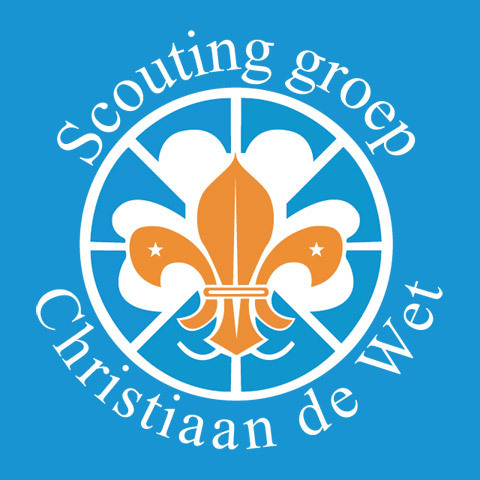

Over mijn hobby
Mijn hobby is scouting. Ik zit bij scoutinggroep Christiaan De Wet in Ouderkerk aan den IJssel. De groep is verdeeld in vijf leeftijdsgroepen(speltakken):
- Bevers(5-7 jaar)
- Welpen(7-11 jaar)
- Scouts(11-15 jaar)
- Explorers(15-18 jaar)
- Roverscouts/Stam(18 jaar en ouder)

Ik zit bij de explo's (Explorers). Bij de explo's moeten we zelf de opkomsten invullen en zelf kampen organieseren. Daarbij hebben wij begeleiding die ons daarbij help. We proberen elke opkomst iets origineels te doen. Om dit te kunnen doen hebben we een budget van ongeveer 16 euro maar soms gebruiken we minder dan 16 euro en kunnen we een andere keer meer uitgeven voor een opkomst. We zijn bijvoorbeeld een keer naar een schietvereniging geweest maar ook hebben we een soort kookwedstrijd gehouden.
Ook moeten we twee kampen organiseren één met pasen en één in de zomer. Hiervoor moeten we zelf betalen en halen we geld op door te helpen met de maraton van Rotterdam door bekertjes water uit te delen, ook staan we op een klein festieval in ouderkerk met Koningsdag.
Voordat we het kamp gaan organiseren maken we groepjes die gaan zoeken naar: Wat we welke dag gaan eten, wat we aan uitjes gaan doen en naar welke campings we gaan en of de routes er op aansluiten.
ook staan we op een klein festieval in ouderkerk met Koningsdag.
Voordat we het kamp gaan organiseren maken we groepjes die gaan zoeken naar: Wat we welke dag gaan eten, wat we aan uitjes gaan doen en naar welke campings we gaan en of de routes er op aansluiten.